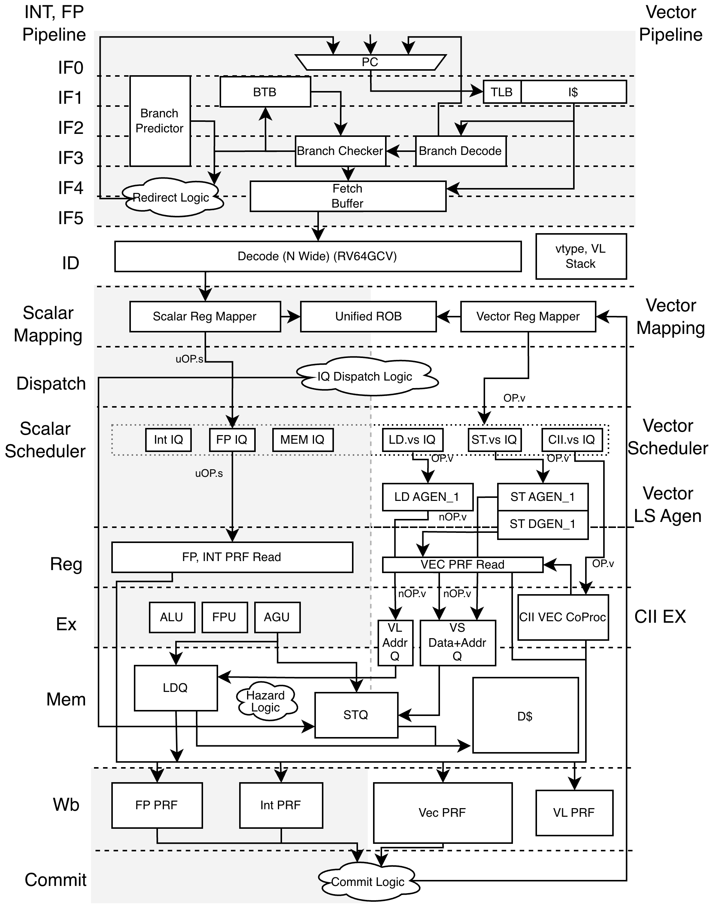
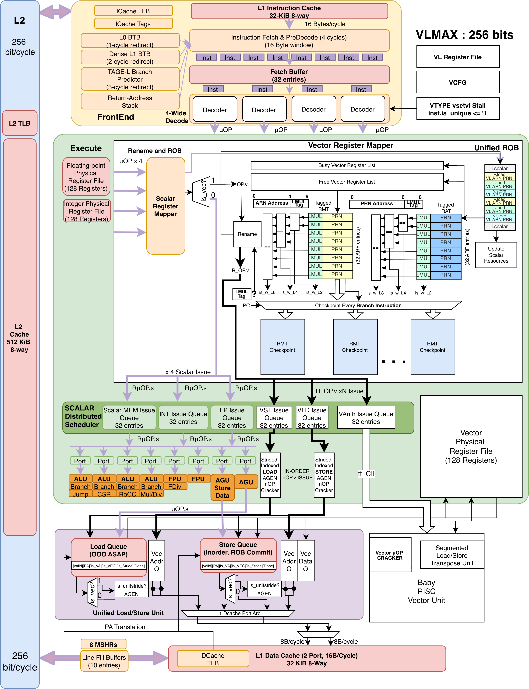

Abstract
Caracal is Tenstorrent’s fork of the Berkeley Out-of-Order Machine (BOOM), a synthesizable, parameterizable RV64GC out-of-order core. The Caracal microarchitecture is a clean-slate re-architecture of BOOM v4 implmenting RVV 1.0 instructions. The microarchitecture provides OOO vector load/store support along with a In-Order Vector Unit for arithmetic operations. The vector co-processor is integrated using the Tenstorrent Custom Instruction Interface (tt_CII).
Introduction & Overview
This document provides an overview of the Caracal micro-architecture, its relationship to BOOM and the Chipyard ecosystem, and details on its implementation of the RISC-V ISA and Vector Extension (RVV).
|
|
Unless otherwise specifically mentioned the reader should assume that Caracal does not modify the existing BOOM micro-architecture. |
Relationship to BOOMv4 and Chipyard
Caracal is a fork of BOOMv4 [5/20/2026] with a clean-slate re-architecture to support RVV 1.0 and OOO vector load/store. The scalar pipeline is largely unchanged from BOOMv4, with the front-end and back-end stages extended to support vector instructions and state. Caracal remains compatible with the Chipyard ecosystem, allowing it to be used as a drop-in core for Chipyard SoC designs and simulations.
The following table shows which modules have been modified to support RVV1.0 instructions and OOO vector load/store support, with in-order CII issued vector arithmetic operations.
| Subsystem | Caracal status (unchanged / extended / new) |
|---|---|
Front-end (fetch, BPU) |
Unchanged |
Decode / Rename |
Extended |
Integer execution |
Unchanged |
FP execution |
Unchanged |
Vector (RVV) execution |
New |
Load/Store Unit |
Extended |
Memory system |
Unchanged |
The Caracal Pipeline

Caracal keeps BOOM v4’s nine-stage out-of-order pipeline intact and threads
a vector path through it. Everything is gated on the usingRVV core parameter
(common/parameters.scala), so with vectors disabled the core elaborates as
stock BOOM v4. The stages below follow an instruction from fetch to commit;
greyed stages in the figure are bit-identical to BOOM v4, and each
description calls out only where the vector path attaches.
- Fetch (F0–F5)
-
Identical to BOOM v4. The six-stage front-end (next-PC select, I$ access, I$ response, fetch-buffer enqueue, BPD redirect, deliver-to-core) and the TAGE-based branch predictor are untouched — vector instructions are ordinary 32-bit (or RVC-expanded) words and are not distinguished until decode. No vector state is read or written here.
- Decode
-
Extended. The scalar decoders are unchanged; a parallel vector decoder (
VDecode) recognizes RVV opcodes (v_legalgate inexu/decode.scala) and populates the new vectorMicroOpfields —is_vec, the logical vector specifiers (lvs1/lvs2/lvs3/lvd/lvm), and thevconfigsnapshot (vstart/vl/vtypemirror) incommon/micro-op.scala.vset{i}vl{i}is decoded as a scalar ALU uop (notis_vec) so it updatesvtype/vlin-line on the existing integer datapath; younger vector uops carry the resultingvconfigso they need no separate CSR read. Decode also sets theiq_typerouting bits for the new vector issue queues (IQ_V_LOAD/IQ_V_STORE/IQ_V_ALU, widened incommon/consts.scala). - Rename
-
Extended. The scalar integer/FP map tables, free lists, and busy tables are the BOOM v4 design unchanged. Caracal adds a third register class —
RT_VEC(common/consts.scala) — and a vector physical register file (numVecPhysRegs, default 128) renamed alongside INT and FP, mapping the logicallvs*/lvd/lvmspecifiers to physicalpvs*/pvdest/pvm. Vector ops allocate ROB entries through the same path as scalar ops. - Dispatch (Rename2)
-
Reuses BOOM v4’s dispatcher unchanged. Dispatch routes purely on the
iq_typebits set in decode, so vector uops fall into the vector issue queues with no vector-specific dispatch logic. - Issue
-
Extended. The age-ordered issue-unit logic is reused; Caracal instantiates additional vector issue queues (
IQ_V_LOAD,IQ_V_STORE,IQ_V_ALU) alongside the scalarIQ_MEM/IQ_UNQ/IQ_ALU/IQ_FP. The wakeup/select policy is the same; only the queue set and operand-readiness tracking are widened to cover vector physical registers. - Register Read
-
Extended. Integer and FP read out of their existing regfiles unchanged. Vector-ALU and vector-load/store uops read their operands (
pvs1/pvs2/pvs3, maskpvm) from the vector register file through dedicated read ports; the bypass network for scalar results is unchanged. - Execute
-
New (vector) / unchanged (scalar). The integer ALUs, mul/div, branch unit, and FPU are the BOOM v4 functional units, untouched. Vector arithmetic is not executed on a BOOM EU: vector-ALU uops are issued in program order over the Tenstorrent Custom Instruction Interface (tt_CII) to an in-order vector unit that owns the vector lanes and vector register file datapath. This is the core architectural divergence — BOOM remains the OoO scalar host and scheduler, while RVV arithmetic executes on the attached in-order coprocessor.
- Memory (LSU)
-
Extended. The scalar LDQ/STQ, store-to-load forwarding, and 3-stage D$ pipeline (
s0/s1/s2) are reused. Caracal adds out-of-order vector load/store: vector memory uops (IQ_V_LOAD/IQ_V_STORE) carry the statically-decoded access descriptor (v_eew,mop,nf, unit-stride/strided/indexed/segment flags fromVLSDecode) and generate element/segment accesses against the same D$ port, ordered through the existing LSU disambiguation machinery. - Writeback
-
Extended. Scalar results write back to the INT/FP regfiles exactly as in BOOM v4. Vector results (
RT_VECdestinations) write back to the vector register file; the writeback arbitration is the BOOM v4 design widened for the additional vector write ports. - Commit
-
Reuses BOOM v4’s ROB unchanged in structure. The ROB entry’s
dst_rtypewas widened to 3 bits (exu/rob.scala) to encodeRT_VEC, so vector uops commit in program order through the same head-pointer/exception machinery as scalar ops. Precise vector state (vtype/vl) is recovered on redirect/exception via the per-uopvconfigsnapshot rather than a separate rollback path.
Core Overview

The Instruction Fetch Stage
The Instruction fetch stage is unchanged from BOOMv4. You may review the BOOMv4 IFU here: https://docs.boom-core.org/en/latest/sections/instruction-fetch-stage.html .
Vector (RVV) Decode
The Decoder is extended to support RVV1.0 instruction opcodes. The decoder itself is single cycle combinational module which produces the decoded uOP packet bundle. For Caracal, parameterizable super-scalar decoder support is also maintained.
|
|
A uOP packet in BOOMv4 is simply a decoded instruction. The decoder does not perform any cracking or micro-op expansion; all instructions, including vector instructions, are decoded into a single uOP. |
| Parameter | Value |
|---|---|
RVV spec version |
RVV1.0 |
VLEN |
256 |
ELEN |
64 |
Supported SEW(s) |
4, 8, 16, 32, 64 |
Supported LMUL(s) |
ALL |
Vector regfile depth |
128 |
VSET Special Handling
Because we delay vector uOP cracking until the execution stage of the pipeline, the vector mapper must in advance allocate enough vector PRNs for a specific instruction based on LMUL/EMUL. Thus all uOPs emitted by the decoder must contain the calculated EMUL of the instruction. This EMUL information is used by the Mapper to allocate PRN vector register groups.
We introduce a new unit called Vector Config Unit. The VCFG keeps a local copy of the VTYPE and VL values set by a vset instruction, so that dependent, subsequent instructions can know the most recent value of vset and be included in the uOP. The VCFG will also store performance counters and other related CSRs for vector instructions. The VCFG must also handle NxWide instruction decoder width, and handle the case where there are more than 1 vset instruction in a instruction bundle, the newest vset is used.
vsetivli is the best case instruction as the VTYPE and VL is an immediate value and can be immediately decoded and stored in the VCFG for decoding of subsequent vector instructions.
vsetvli is the most common case where VTYPE is an immediate but VL is supplied by a integer source register. In this case the decoder does not need to stall or wait for VL instead the uOP VL type is marked as a register, and the scalar value is resolved when the vector uOP enters the scalar scheduler.
vsetvl is a special case as both the VTYPE and VL is a scalar source operand instead of an immediate encoded in the instruction. In this case the newer vector uOP cannot continue to be issued as the VTYPE value is needed by the next pipeline stage. To solve this issue we re-use the BOOM is_unique feature, and mark vsetvl as a unique instruction. This forces all instructions in the BOOM pipeline to complete before vsetvl can be issued by the decoder. This allows the scalar instructions that calculate the vtype and VL value to complete, and the VCSRU reads this value and updates its local copy of VTYPE, VL and use it for subsequent vector uOP decoding.
This does result in poorer performance for this instruction, but is acceptable as this vsetvl instruction type is not common.
The Rename Stage
The Rename Stage is extended to support vector register renaming. For vector instructions the rename stage is split into two pipeline stages Scalar Mapping/Rename and Vector Mapping/Rename.
In the scalar mapping the original BOOM implementation is unchanged, there still exists a integer rename_stage and fp_rename_stage. Scalar instructions may enter the rename stage and be dispatched normally to the scalar instruction queues.
Vector instructions will also enter the rename_stage and fp_rename_stage and have any scalar destination or source registers assigned a int or fp PRN. For vsetivl the VL register will require a integer PRN to be allocated for the VL value, which will be resolved in the scalar scheduling stage.
The vector physical register file will be parameterizable with default support for 128 PRNs.
| Register file | Architectural regs | Physical regs (default) |
|---|---|---|
Integer (INT) |
32 |
128 |
Floating-point (FP) |
32 |
128 |
Vector (VEC) |
32 |
128 |
|
|
Caracal/BOOM has no dedicated mask register file; Vector mask is treated like any other vector register, with masking semantics handled in the execution units. |
Rename Map Table (RMT)
BOOM maintains two sets of register rename map tables Speculative RMT and Committed RMT. The Committed RMT is an optional feature, which we we will always keep enabled in Caracal.
-
Speculative RMT — map_table This is the working table updated at rename time as physical destinations are allocated. It reflects in-flight, not-yet-committed instructions. Source operands are read from it (map_resps).
-
Architectural / Committed RMT — com_map_table Updated only by committed uops (driven from the ROB via com_remap_reqs). It holds the known-good architectural state.
When an exception occurs, the com_map_table is copied to the speculative map_table. Because the com_map_table only contains the latest committed ARN to PRN mappings it holds the most recent correct state before the trapping instruction, thus instead of a ROB 1 entry/cycle walk back a single cycle copy is all that is needed to roll back the map_table.
The vector mapper extends the existing RenameStage implementation to support vector renaming. The vector mapper adds three features:
-
LMUL TAG Whole Vector Group Checker We add an additional structure to the RMT for vector remapping. The LMUL tag checker adds a 2 bit tracking table for each of the ARN indexes to track which vector register group the ARN index belongs to.
LMUL |
Encoding |
LMUL=1 |
2’b00 |
LMUL=2 |
2’b01 |
LMUL=4 |
2’b10 |
LMUL=8 |
2’b11 |
-
Periodic Vector RMT Checkpoints
-
LMUL Tag Miss Handler
Free List
Busy Table
The Busy Table tracks the readiness status of each physical register. If all physical operands are ready, the instruction will be ready to be issued.
The Vector Busy
Reorder Buffer (ROB)
Branch Snapshots
A copy of the speculative map_table is taken per outstanding branch (upto maxBrCount entries).
Exception Handling
TODO: ROB size, commit width, exception handling, how vector ops occupy ROB entries.
| Event | Recovery source | Cost |
|---|---|---|
Branch mispredict |
|
1 cycle, only flushes younger-than-branch |
Exception / pipeline flush |
|
1 cycle, flushes everything in flight |
Normal |
|
advance |
The Issue Units
TODO: Describe issue queues (INT/MEM/FP/VEC), their depths, and the scheduling/wakeup policy.
The Register Files and Bypass Network
TODO: Read/write port counts per register file, bypass network topology.
The Execution Pipelines
TODO: Enumerate the functional units (ALUs, mul/div, FPU, branch unit, AGU) and their latencies.
The Load/Store Unit (LSU)
TODO: LDQ/STQ sizes, store-to-load forwarding, memory ordering, and any vector load/store integration.
The Memory System
The memory subsystem remains unchanged from BOOMv4. However we recommend to use LargeBoomV4Config or MegaBoomV4Config configurations to enable the dual port L1 DCache for best performance.
Vector AGEN & Dispatch
TODO: How vector ops are cracked/expanded into micro-ops and dispatched. Cross-reference [_vector_rvv_decode].
The Vector Register File
TODO: Width, port count, renaming of vector registers, masking.
Vector Execution Units
TODO: Lanes, supported operation classes (integer, fixed-point, FP, reductions, permutes), and latencies.
The Vector Load/Store Unit (VLSU)
TODO: Unit-stride / strided / indexed accesses, segment loads/stores, interaction with the scalar LSU and D$.
Masking & Tail/Inactive Handling
TODO: Mask register usage, tail-agnostic/undisturbed and mask-agnostic/undisturbed policies.
Usage
Parameterization & Configs
TODO: List the Caracal config classes and the config fragments that compose them.
| Config | Size | Notes |
|---|---|---|
|
1 small core |
<fill in> |
|
1 medium core |
<fill in> |
|
1 large core |
<fill in> |
|
1 mega core |
<fill in> |
<Caracal vector config> |
<fill in> |
<fill in> |
The Caracal/Chipyard Ecosystem
TODO: How Caracal plugs into Chipyard, FireSim, and ASIC flows.
Debugging
TODO: Waveform flows (FSDB/Verdi, VPD/DVE, VCD/GTKWave, Xcelium IDA), useful internal signals, and the trace interface. === Micro-architectural Performance Counters
TODO: Available HPM/uarch counters and how to read them.
Verification
TODO: riscv-tests, torture/csmith, co-simulation, and any RVV-specific verification (vector test suites).
Physical Realization (PPA)
TODO: Synthesis/area results, target frequency, and PPA goals.
Cross-reference the area analysis docs in ../docs/.